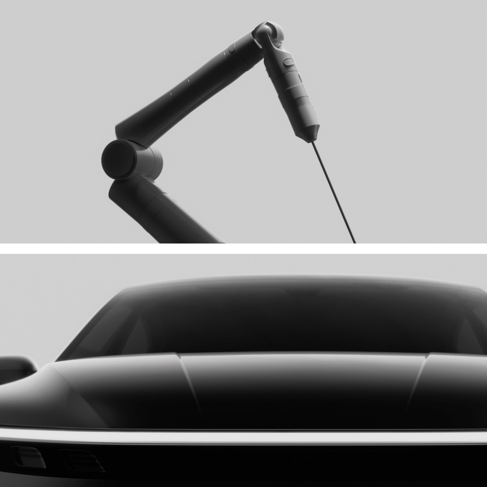

Python Mobile Development: Bringing PySide6 to iOS
Ece Cinüçen
 cinucen
cinucen
 ecinucen
ecinucen

PySide6 is Qt, from Python
- Qt is a cross-platform application framework, written in C++.
- The same codebase runs on Windows, macOS, Linux, Android, iOS and embedded devices.
- It ships in desktop apps, cars, medical devices and industrial machines.
- PySide6 is the official Python binding, maintained by The Qt Company and generated by Shiboken.
- It is dual-licensed under LGPLv3 or a commercial license.
# pip install PySide6
import sys
from PySide6.QtWidgets import (
QApplication, QLabel)
app = QApplication(sys.argv)
QLabel("Hello, PyBerlin!").show()
sys.exit(app.exec())
Two ways to build a UI, and where it runs
Widgets
button = QPushButton("Click me")
button.clicked.connect(on_click)
layout.addWidget(button)
QML
Button {
text: "Click me"
onClicked: backend.on_click()
}
PySide6 runs on Windows, macOS, Linux and Android, and now on iOS as well
This already works
Plain main.py. Real device. Now let's see how.
Why iOS is different
- No system Python: the interpreter and the standard library ship inside the app
- No loading code at runtime: an app can only run what was signed into it
- Everything is built, signed and launched through Xcode
- Simulator and device are different targets, so different binaries
On iOS it all becomes one program
PySide6 is Python on top of compiled C++.
Desktop and Android
The compiled parts stay separate files, loaded when you import them.
iOS
They are merged into one program file when you build it.
Apple does not allow loading them separately.
Decided at build time, not at
import time.
The building blocks
- Python for iOS, from python.org (PEP 730)
- Qt for iOS
- PySide6 + Shiboken, cross-compiled for iOS
- Your app, as plain Python files
App.app
Your Python code
PySide6 + Shiboken
Qt for iOS
Python.xcframework
Two stages
1. Build the wheels
- Cross-compile PySide6 for one target
- Slow, done rarely
2. Deploy your app
pyside6-ios-deploy- Fast, done every time
Same shape as Android
Stage 1: cross-compile the wheels
$ git clone https://code.qt.io/pyside/pyside-setup
$ cd pyside-setup
$ python tools/cross_compile_ios/main.py \
--qt-install-path ~/Qt/6.12.0 \
--arch arm64 --simulator
dist_ios/pyside6-...-ios_arm64_simulator.whl
dist_ios/shiboken6-...-ios_arm64_simulator.whl
- One run per target (device, simulator)
- The wheel tag records the target
- The Qt for iOS kit is bundled inside the wheel
"Do I have to cross-compile PySide6 myself?"
Stage 2: pyside6-ios-deploy
$ pyside6-ios-deploy main.py \
--wheel-pyside pyside6-...-ios_arm64_simulator.whl \
--wheel-shiboken shiboken6-...-ios_arm64_simulator.whl
open deployment/ios_arm64_simulator/pyside_app_demo.xcodeproj
- App + wheels in, Xcode project out
- Nothing is compiled; it takes seconds
- No
--simulator flag: the target comes from the wheel's platform tag
- Settings are kept in
pysidedeploy.spec
What gets generated
// main.mm - generated by pyside6-ios-deploy
PyImport_AppendInittab("PySide6.QtCore", PyInit_QtCore);
PyImport_AppendInittab("PySide6.QtWidgets", PyInit_QtWidgets);
PyImport_AppendInittab("shiboken6.Shiboken", PyInit_Shiboken);
Py_InitializeFromConfig(&config);
PyRun_SimpleFile(fp, "main.py");
main.mm: your imports are scanned → those Qt modules get linked → registered hereInfo.plist: app name, bundle id, versionproject.pbxproj: contains what to link, and build phases that copy the standard library and your .py files into the bundle
Open it in Xcode, press Run.
Python packages on iOS
Pure Python
- Works if you copy the folder next to your code; data files are not bundled
Packages with compiled code
- NumPy, Pillow, anything with C inside
- Same problem PySide6 itself had
- Not handled by the tool yet
Today the bundle carries your code, PySide6 and Shiboken - nothing else.
Demo: Tetrix in the Simulator
tetrix.py
→
pyside6-ios-deploy
→
Xcode
→
Running game
The same app on a real device
That clip from the beginning - this is all it took.
- Same
main.py, nothing changed
- Build with the device wheels (
ios_arm64)
- Pass your Apple Developer team:
--team-id
- Xcode signs and installs it
Status
- Works: simulator and physical device
- Works: Widgets & QML Apps
- Part of PySide 6.12, released together with Qt 6.12
- App Store submission: not verified yet, feedback welcome
Known limits
- Use the official Qt for iOS kit from the Qt installer:
- Custom Qt builds are not supported
- C-extension packages are not supported
- Wheels are built per target: once for the simulator, once for the device (no universal binary)
- A Qt module missing from the kit is dropped silently
Your PySide6 app already runs on iOS
- Same Python, same Qt, same code as your desktop app
- Two stages: build wheels once,
pyside6-ios-deploy every time
- Everything is linked in at build time: your app can only use the modules built into it
Roadmap
- Qt 6.12 is out; PySide 6.12 ships this support
- Third-party packages - the big missing piece, and the hard one
- A real diagnostic when a Qt module is dropped
- More examples
Try it, break it, tell us
- Docs: https://doc.qt.io/qtforpython-6/deployment/deployment-pyside6-ios-deploy.html
- Bug tracker: bugreports.qt.io (project PYSIDE)
- Source and examples: code.qt.io/cgit/pyside/pyside-setup
- Talk repo: github.com/cinucen/PySide6-iOS-PyBerlin2026
Questions?
Ece Cinüçen
cinucen
ecinucen
github.com/cinucen/PySide6-iOS-PyBerlin2026
